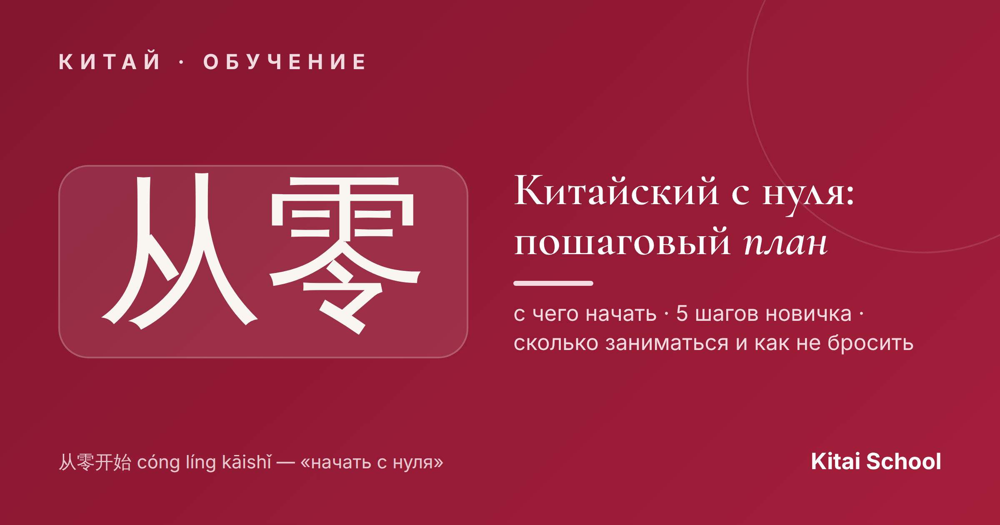
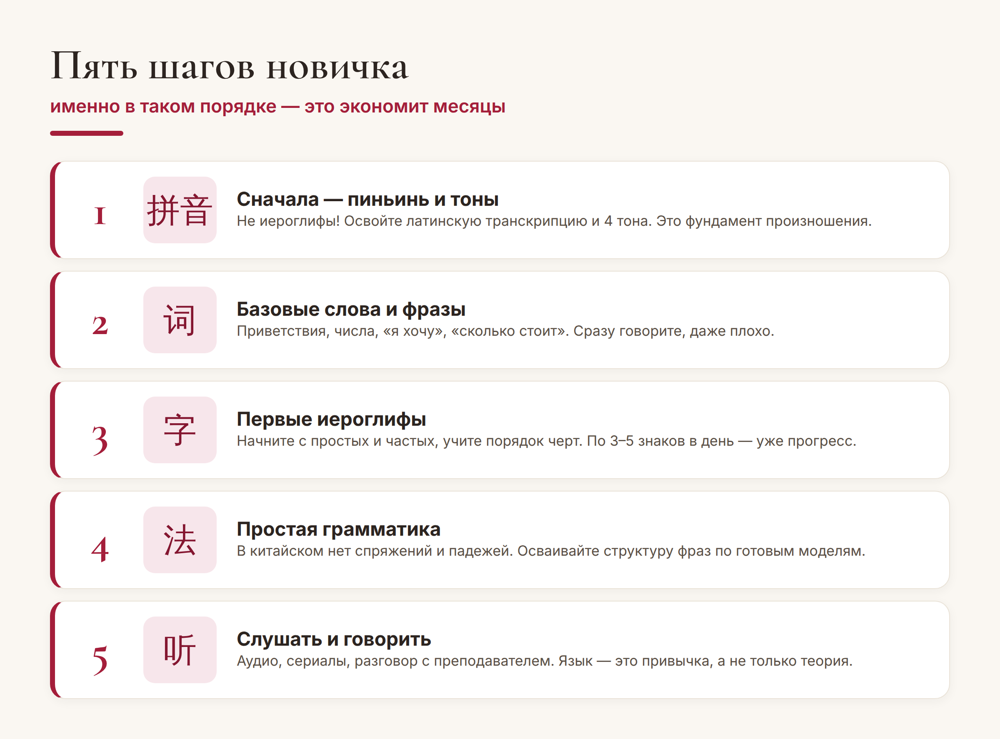
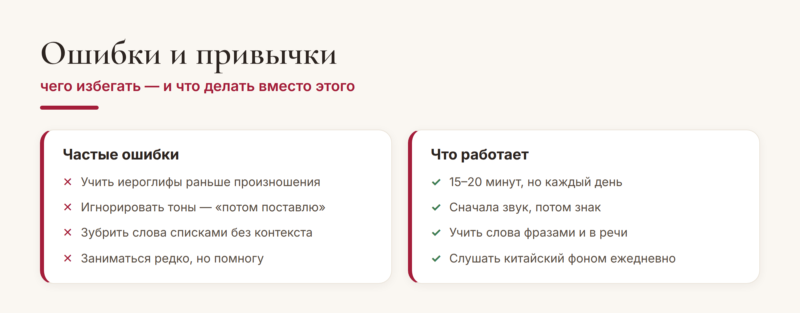

Китай · обучение

«Хочу выучить китайский, но с чего начать?» — самый частый вопрос новичка. Иероглифов тысячи, тоны пугают, непонятно, за что хвататься. Хорошая новость: если идти по порядку, всё складывается в понятный маршрут. Вот пошаговый план, как учить китайский с нуля и не бросить на первой неделе.
Главная ошибка самоучек — хвататься сразу за иероглифы. Порядок шагов важен: он экономит месяцы и бережёт мотивацию.

Разберём чуть подробнее. Шаг 1 — пиньинь и тоны. Это латинская запись звучания и четыре тона; без них вы будете говорить так, что вас не поймут. Шаг 2 — базовые фразы: начните говорить сразу, пусть с ошибками. Шаг 3 — первые иероглифы: по 3–5 частых знаков в день с правильным порядком черт. Шаг 4 — грамматика: её в китайском на удивление мало (нет спряжений, родов и падежей). Шаг 5 — слушать и говорить: язык — это привычка, а не сборник правил.
Большинство тех, кто бросил китайский, спотыкаются об одни и те же грабли. Вот чего избегать — и что делать вместо этого:

Запомните главное правило: лучше 15–20 минут каждый день, чем три часа раз в неделю. Язык любит регулярность. Маленькие ежедневные подходы дают несравнимо больше, чем редкие «марафоны», после которых хочется всё бросить.
Честно: китайский — не самый быстрый язык, но и не такой страшный, как кажется. Ориентиры примерные, но полезные:
За 2–3 месяца регулярных занятий вы освоите произношение и сможете говорить простые бытовые фразы. За полгода-год — дойдёте до уровня, на котором объясняетесь в поездке и понимаете простые тексты (примерно HSK 2–3). Дальше всё зависит от целей и практики.
Совет. Не пытайтесь пройти этот путь в одиночку по учебнику. Произношение и тоны почти невозможно поставить самому — на старте очень выручает преподаватель, который слышит ошибки и сразу поправляет. Это экономит месяцы и спасает мотивацию.
Вот и весь план: пиньинь → слова → иероглифы → грамматика → речь, по чуть-чуть каждый день. Начать китайский с нуля намного проще, когда перед глазами понятный маршрут. Сделайте первый шаг сегодня — и через пару месяцев удивитесь, как далеко продвинулись.
Лёгкого вам старта! 千里之行，始于足下。